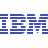
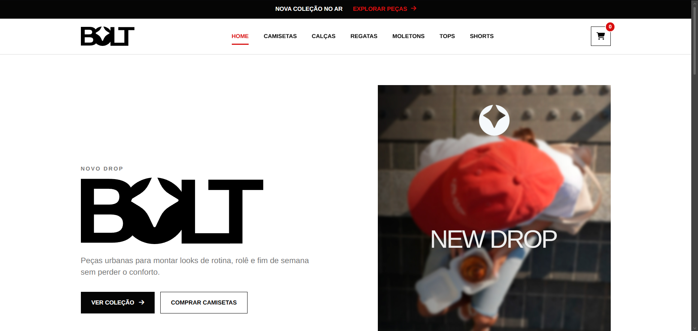
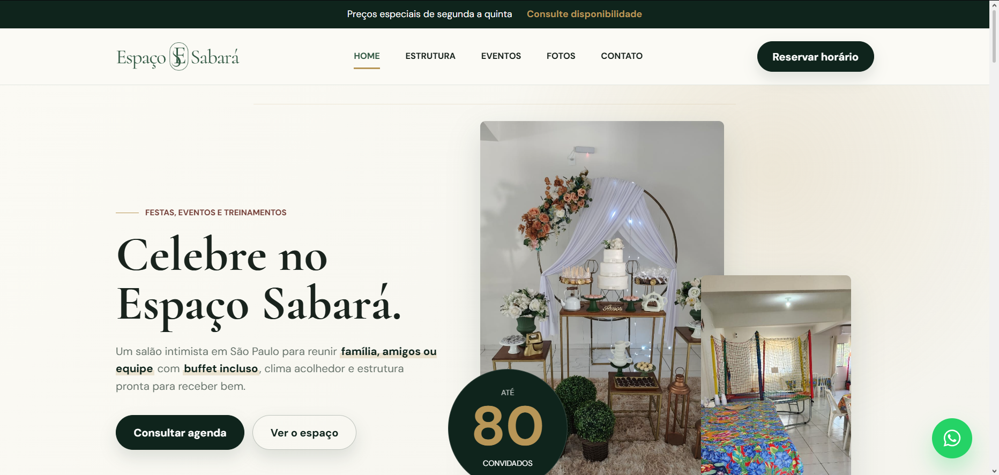

Personal portfolio
Personal landing page built with HTML, CSS, and JS, with an editorial look and a focus on professional presentation, responsiveness, and visual identity.
- HTML
- CSS
- JS
full stack developer
I build complete digital solutions, from landing pages to web applications, combining clean code, intuitive interfaces, and experiences designed for people.

about me
Full Stack Developer in training. Creating digital products from end to end
I am a Systems Analysis and Development student at FIAP and a Multimedia technician from Senac. I am building my path as a Full Stack Developer, developing applications that combine intuitive interfaces, programming logic, and scalable solutions. I enjoy turning ideas into modern digital products, blending technology, design, and a well-planned user experience.

live now
Published websites and interfaces, with links to view each project and also check the code on GitHub.
Personal landing page built with HTML, CSS, and JS, with an editorial look and a focus on professional presentation, responsiveness, and visual identity.

Institutional website for Comuta Reformas, built in Wix with custom code to modernize visuals, services, and responsiveness.
Private Git

Website for Comuta's social initiative, built in Wix with Velo (JS) integration, including donation flows for Pix, credit card, and recurring giving.
Private Git




from briefing to deploy
Each project is developed with planning, communication, and attention to detail. You follow every step and receive a solution ready to generate results.
I understand your goals, your audience, and what makes your project unique. This alignment becomes the foundation for every decision that follows.
I plan identity, user experience, and responsiveness before turning the interface into code.
I build a modern, fast, and responsive product, following good programming practices to ensure quality, performance, and easy maintenance.
After testing and final adjustments, your project is delivered ready to go live, with everything working as planned.
shall we build?
Have a project in mind? Let's talk about turning your idea into reality, thinking through design, development, digital presence, and a delivery that makes sense for your moment.